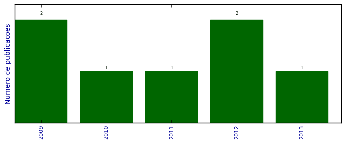

UFSM - Análise do Lattes
Artigos completos publicados em periódicos

Número total de itens: 7
(A1: 0, A2: 0, B1: 0, B2: 0, B3: 1, B4: 1, B5: 0, C: 0, Qualis não identificado: 5)
Legenda Qualis:
- Publicação para a qual o nome exato do Qualis foi identificado: Qualis <estrato>
- Publicação para a qual um nome similar (não exato) do Qualis foi identificado: Qualis <estrato> (nome similar)
- Publicação para a qual nenhum nome do Qualis foi identificado: Qualis não identificado (nome usado na busca)
2013
| 1. | GAMA, PAULO ; PEIXOTO, PAULO ; SEIXAS, ANA MARIA ; ALMEIDA, FILIPE ; ESTEVES, DENISE. A ética dos alunos de administração e de economia no ensino superior. RAC. Revista de Administração Contemporânea (Online). v. 17, p. 620-641, 2013.  [ citações Google Scholar | citações Microsoft Acadêmico | busca Google ] Qualis: B4 (RAC. Revista de Administração Contemporânea (Impresso)) |
2012
| 1. | CIFELLI, G. ; PEIXOTO, P.. Centros históricos e turismo patrimonial: o pelourinho como exemplo de uma relação contraditória. Sociologia (Porto). v. XXIV, p. 35-54, 2012. [ citações Google Scholar | citações Microsoft Acadêmico | busca Google ] Qualis: Não identificado (Sociologia (Porto)) |
| 2. | DUXBURY, N. ; FORTUNA, C. ; BANDEIRINHA, J. A. ; PEIXOTO, P.. Em torno da cidade criativa. Revista Crítca das Ciências Sociais. v. 99, p. 5-8, 2012. [ citações Google Scholar | citações Microsoft Acadêmico | busca Google ] Qualis: B3 (Revista Crítica de Ciências Sociais) |
2011
| 1. | PEIXOTO, P.. O património revela o mundo como ele é. CEAMA â013 Centro de Estudos de Arquitetura Militar de Almeida. v. 7, p. 228-232, 2011. [ citações Google Scholar | citações Microsoft Acadêmico | busca Google ] Qualis: Não identificado (CEAMA â013 Centro de Estudos de Arquitetura Militar de Almeida) |
2010
| 1. | PEIXOTO, P.. Redes de cidades e inovação social. Revista de Ciências Sociais (UFC). v. 41, p. 155-162, 2010. [ citações Google Scholar | citações Microsoft Acadêmico | busca Google ] Qualis: Não identificado (Revista de Ciências Sociais (UFC)) |
2009
| 1. | LEITE, R. P. ; PEIXOTO, P.. Políticas urbanas de patrimonialização e contra-revanchismo: o Recife Antigo e a Zona Histórica da Cidade do Porto. Políticas urbanas de patrimonialização e contra-revanchismo: o Recife Antigo e a Zona Histórica da Cidade do Porto. v. 21, p. 93-104, 2009. [ citações Google Scholar | citações Microsoft Acadêmico | busca Google ] Qualis: Não identificado (Políticas urbanas de patrimonialização e contra-revanchismo: o Recife Antigo e a Zona Histórica da Cidade do Porto) |
| 2. | PEIXOTO, P.. A sociedade SPAM. Ainda é possível resgatar a Internet em benefício do conhecimento?. Kriativ Tech. v. 2, p. 71-76, 2009. [ citações Google Scholar | citações Microsoft Acadêmico | busca Google ] Qualis: Não identificado (Ainda é possível resgatar a Internet em benefício do conhecimento?. Kriativ Tech) |
(*) Relatório criado com produções desde 2009 até HOJE
Data de processamento: 11/04/2014 18:38:32